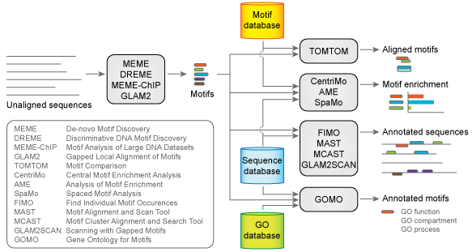

![[UW logo]](images/UWlogo150p.gif)
The MEME Suite allows the biologist to discover novel motifs in collections of unaligned nucleotide or protein sequences and to search for motif occurrences in sequence databases.
The MEME Suite is comprised of a collection of tools that work together, as shown below. Not all the tools are available as webservices, so to get the full power of the MEME Suite you will need to download and install a local copy of the software. To see what has changed recently you can peruse the release notes.
| Motif Discovery | ||
|---|---|---|
| MEME | Find ungapped motifs in unaligned DNA, RNA or protein sequences. | Sample |
| MEME ChIP | Comprehensive motif analysis of large nucleotide datasets such as those from ChIP-seq or CLIP-seq experiments. | Sample |
| DREME | Find short, ungapped motifs in large sets of DNA or RNA sequences. Also allows discriminative motif analysis using a set of control sequences. | Sample |
| Glam2 | Find gapped motifs in DNA or protein sequences. It has a tutorial. | Sample |
| Motif Enrichment Analysis | ||
| AME | Motif Enrichment Analysis: find known DNA or RNA motifs that are relatively enriched in the input sequences compared to shuffled version of those sequences or control sequences. | |
| CentriMo | Local Motif Enrichment Analysis: Find motifs that are enriched in local regions in equal-length sequences. | Sample |
| SpaMo | Motif Spacing Analysis: Find known motifs that occur with preferred spacings relative to a primary motif in a set of DNA sequences. | Sample |
| GOMO | Genome Ontology Motif Enrichment: Identify possible roles (Gene Ontology terms) for DNA binding motifs. | |
| Motif Search | ||
| FIMO | Search a sequence database for occurrences of known motifs. This program treats each motif independently and reports all putative motif occurrences below a specified p-value threshold. | Sample |
| MAST | Search a sequence database for occurences of known motifs. This program assumes exactly one occurrence of each motif per sequence, and each sequence in the database is assigned a p-value, based on the product of the p-values of the individual motif occurrences in that sequence. | Sample |
| MCAST | Search a sequence database for clusters of known motifs. mcast employs a motif-based hidden Markov model, using a star topology and a novel scoring algorithm. The motifs may appear in any order. | Sample |
| Glam2Scan | Search for occurences of gapped motifs, discovered by GLAM2. | Sample |
| Motif Comparison | ||
| Tomtom | Find motifs that are similar to a given DNA or RNA motif by searching a database of known motifs. | Sample |
| Additional Primary Tools | ||
| AMA | Print the Average Motif Affinity score of each sequence in a database. The score is calculated by averaging the likelihood ratio scores for all feasible binding events to the given sequence and to its reverse strand. | |
| Motif Format Conversion Scripts | Foreign Motif Formats | |
| beeml2meme | Convert an BEEML matrix file to MEME format. | |
| chen2meme | Convert a CHEN matrix file to MEME format. | |
| iupac2meme | Convert an IUPAC string to MEME format. | |
| jaspar2meme | Convert a directory of JASPAR files to MEME format. | |
| meme2meme | Convert and merge multiple MEME formatted files. | |
| nmica2meme | Convert a nestedMICA (BioTiffin/XMS) matrix file to MEME format. | |
| priority2meme | Convert a PRIORITY matrix file to MEME format. | |
| rna2meme | Convert a FASTA file with short RNA sequences into motifs for DNA they might bind in MEME format. | |
| scpd2meme | Convert an SCPD matrix file to MEME format. | |
| sites2meme | Convert files containing sites into MEME format. | |
| taipale2meme | Convert a tab-separated file exported from a spreadsheet of Taipale results to MEME format. | |
| tamo2meme | Convert a TAMO matrix file to MEME format. | |
| transfac2meme | Convert a TRANSFAC matrix file to MEME format. | |
| uniprobe2meme | Convert a UNIPROBE matrix file to MEME format. | |
| File Format Conversion Utilities | ||
| clustalw2fasta | Convert a Clustalw multiple alignment into FASTA format. | |
| clustalw2phylip | Convert a Clustalw multiple alignment into Phylip format. | |
| glam2format | Convert glam2 motifs to standard alignment formats. | |
| obo2dag | Convert a Gene Ontology OBO file into a GO DAG file. | |
| mast2txt | Convert MAST XML output into plain text. | |
| readseq | Format conversion utility for sequence data. | |
| Other Utilities | ||
| alphtype | Classify a string passed as a command line argument as an instance of the DNA or protein alphabet. | |
| ama-qvalues | Add q-values to AMA output. | |
| ceqlogo | Create motif logos. | |
| compute-prior-dist | Compute the distribution of priors in a MEME PSP format file. | Sample |
| fasta-get-markov | Estimate a Markov model from a FASTA file of sequences. | |
| fasta-io | Read and write FASTA files. | |
| fasta-subsample | Extract a random selection of the sequences in a FASTA file. Can also subsample the sequences themselves. | |
| fitevd | Fit an extreme value distribution to data. | |
| gendb | Generate sequences from a Markov model. | |
| getsize | Print statistics about sequences read from a FASTA file. | |
| glam2mask | Mask glam2 motifs out of sequences, so that weaker motifs can be found. | |
| gomo_highlight | Identify GO terms which are implied by other GO terms, allowing the most specific GO terms to be highlighted in the conversion to html. | |
| meme-io | Print summary of MEME HTML file to standard output as plain text. | |
| meme-rename | Easily rename MEME Suite HTML files to unique names incorporating the path name (rather than "meme.html"). | |
| pmb_bf | Calculate the statistical power of phylogentic motif models. | |
| psp-gen | Generate position-specific priors from positive (likely to contain a feature of interest) and negative (unlikely to contain a feature of interest) sequences for use as an additional input to MEME. | |
| purge | Remove highly similar members of a set of sequences. | |
| qvalue | Compute q-values from p-values. | |
| reconcile-tree-alignment | Given a tree and an alignment, identify the intersection of the sets of sequence IDs and leaf labels. Trim the extra sequences and leaves and print the resulting alignment and tree. | |
| reduce-alignment | Extract specified columns from a multiple alignment. | |
| remove-alignment-gaps | Remove from an alignment all columns that correspond to a gap in a specified species. | |
| shadow | Perform phylogenetic shadowing on a given DNA alignment, using a given tree. | |
| File Formats | ||
| MEME Motif | The motif format which is supported by the MEME Suite. | |
| Background Model | Background frequencies for DNA or protein sequences. | |
| FASTA Sequence | DNA or protein sequences. | |
| ClustalW Alignment | A multiple alignment of DNA or protein sequences. | |
| TRANSFAC Motif | A motif format which can be converted into MEME motifs. | |
| GLAM2 Alphabet | A custom sequence alphabet for GLAM2. This can be used to provide alternate alphabets other than the standard DNA and protein. | |
| GO DAG | A file format which stores the structure of the Gene Ontology so it can be used to improve GOMO output. | |
| Guides and Tutorials | ||
| Script Access | How to access MEME Suite web services from Perl or Python scripts. | |
| Installation | How to install a local copy of the MEME Suite. | |
| Release notes | A list of changes included in the latest release. | |
Visit the MEME Suite home page.
|
|
|
|
|
|
|
|
|